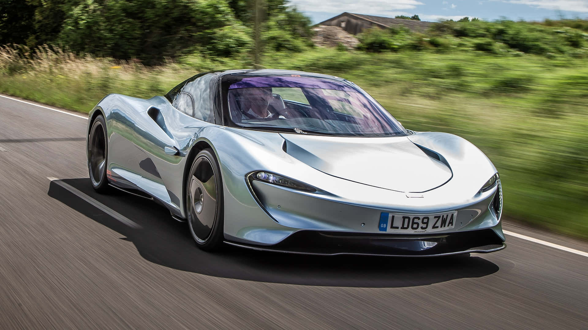
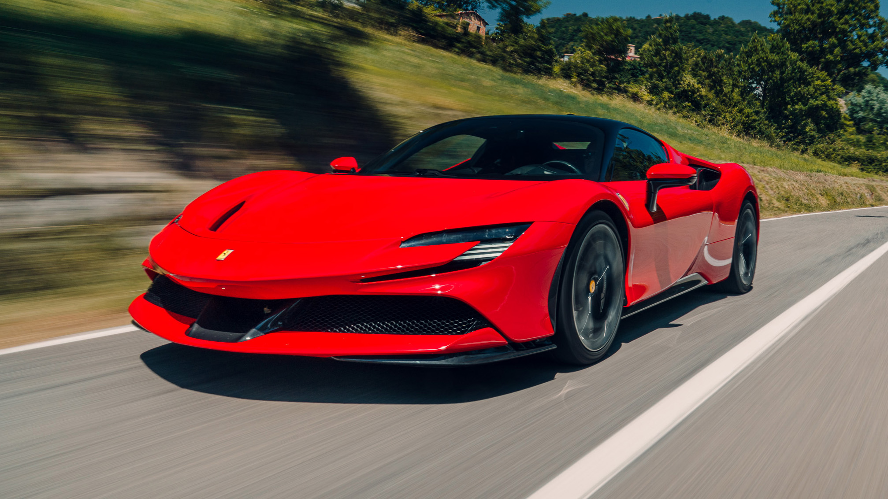
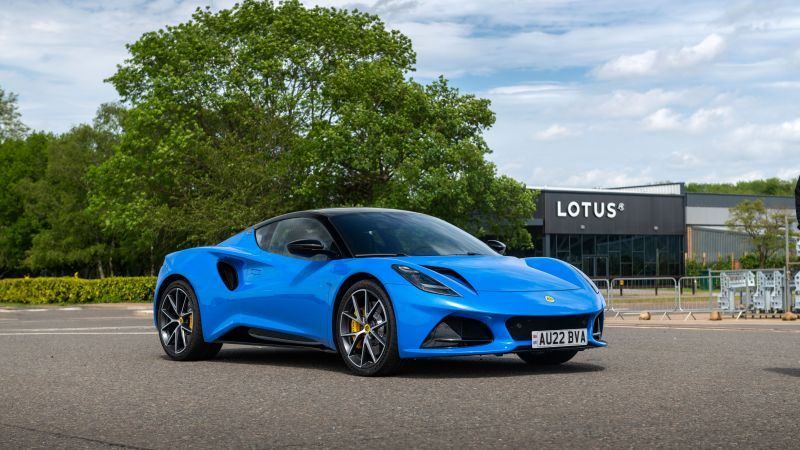

The Lamborghini Sian Roadster is a breathtaking blend of cutting-edge technology and Italian craftsmanship. Its hybrid powertrain combines a V12 engine with a supercapacitor, delivering electrifying performance. With striking aerodynamics and an open-top design, it captivates with its futuristic aesthetics, roaring power, and the promise of an exhilarating driving experience.

The McLaren Speedtail epitomizes automotive elegance and innovation. With its sleek, aerodynamic design and cutting-edge hybrid powertrain, it reaches unparalleled speeds, topping 250 mph. Its luxurious interior boasts a central driving position flanked by two passenger seats, offering a bespoke driving experience. A masterpiece of engineering and craftsmanship.
The Hennessey Venom GT stands as a symbol of raw power and speed, embodying automotive engineering at its extreme. Born from the fusion of a Lotus Exige chassis and a twin-turbocharged V8 engine, it boasts mind-boggling acceleration, reaching 0-60 mph in under 2.5 seconds. A limited-production hypercar, revered by speed enthusiasts worldwide.
The Koenigsegg Jesko epitomizes automotive excellence with its blend of performance and craftsmanship. Named after the founder's father, it boasts a twin-turbocharged V8 engine producing over 1,600 horsepower, propelling it to speeds over 300 mph. Its advanced aerodynamics and innovative technology redefine the limits of hypercar engineering, setting new standards in speed and precision.

The Koenigsegg CCR is a Swedish hypercar epitomizing speed and innovation. Powered by a potent 4.7-liter V8 engine, it delivers a staggering 806 horsepower, propelling it to a record-breaking top speed of over 240 mph. Crafted with lightweight materials and aerodynamic precision, it stands as a pinnacle of automotive engineering excellence.
The Ferrari SF90 Stradale is a groundbreaking plug-in hybrid supercar, boasting exceptional performance and efficiency. Equipped with a turbocharged V8 engine paired with three electric motors, it delivers a combined output of 986 horsepower. Its advanced aerodynamics and cutting-edge technology make it a pinnacle of Italian automotive engineering.
The Rimac Nevera epitomizes electric hypercar excellence, blending stunning design with unparalleled performance. Its four electric motors produce an astonishing 1,914 horsepower, propelling it from 0 to 60 mph in just 1.85 seconds. With advanced AI and regenerative braking, the Nevera redefines what's possible in the realm of electric vehicles.
The Koenigsegg Gemera redefines the concept of a grand tourer with its unmatched combination of performance, luxury, and sustainability. Featuring a groundbreaking hybrid powertrain producing 1,700 horsepower, it accelerates from 0 to 60 mph in under two seconds. With seating for four and innovative features, it's a true marvel of automotive engineering.

The Lotus Emira represents a bold new era for the iconic British brand, blending exhilarating performance with everyday usability. With a choice of potent engines including a supercharged V6, it delivers dynamic handling and blistering acceleration. Its striking design and driver-focused cockpit ensure an unforgettable driving experience.
The Bugatti Chiron is the pinnacle of automotive engineering, epitomizing luxury, power, and speed. Its quad-turbocharged W16 engine unleashes 1,500 horsepower, propelling it to a top speed of over 260 mph. Crafted with exquisite materials and cutting-edge technology, the Chiron is a masterpiece of performance and craftsmanship.